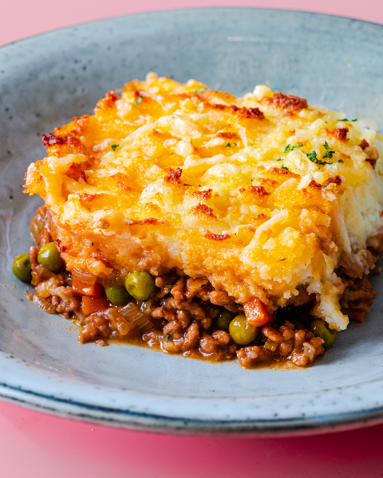
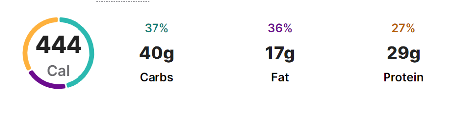

Buffalo Wings


Recipe:
Ingredients:
The beef
- 500 g beef or mutton mince
- 2 tbsp olive oil
- 1 finely diced large onion
- 1 finely diced large carrot
- 100 g garden peas
- 50 g sweetcorn
- 2 crushed garlic cloves
- 10 finely diced mushrooms
- 1 tbsp tomato purée
- 2 dashes worcestershire sauce
The mash potato
- 900 g peeled and diced potatoes
- 85 g butter
- 3 tbsp milk
The topping
- 1/2 cup shredded cheese (cheddar, Colby, Gruyere, or Swiss)
Directions:
- Combine all ingredients (B) in a small bowl.
- Make sure all the chicken wings are dry.
- Place the chicken wings into a large bowl and sprinkle the flour mixture over the chicken wings, coating each wing evenly.
- Put the chicken wings in the refrigerator for 30 minutes (this helps the flour mixture to stick to the chicken wings).
- Heat oil, fry for 10-15 mins or until the chicken wings turn brown.
- Remove chicken wings from oil to a kitchen paper to drain.
- For the sauce, heat butter in a small saucepan over low heat until melted.
- Add in the rest of ingredients (C) and mix well. Remove from heat.
- Put the chicken wings into a large bowl, add sauce and stir.
- Coat all the chicken wings evenly.